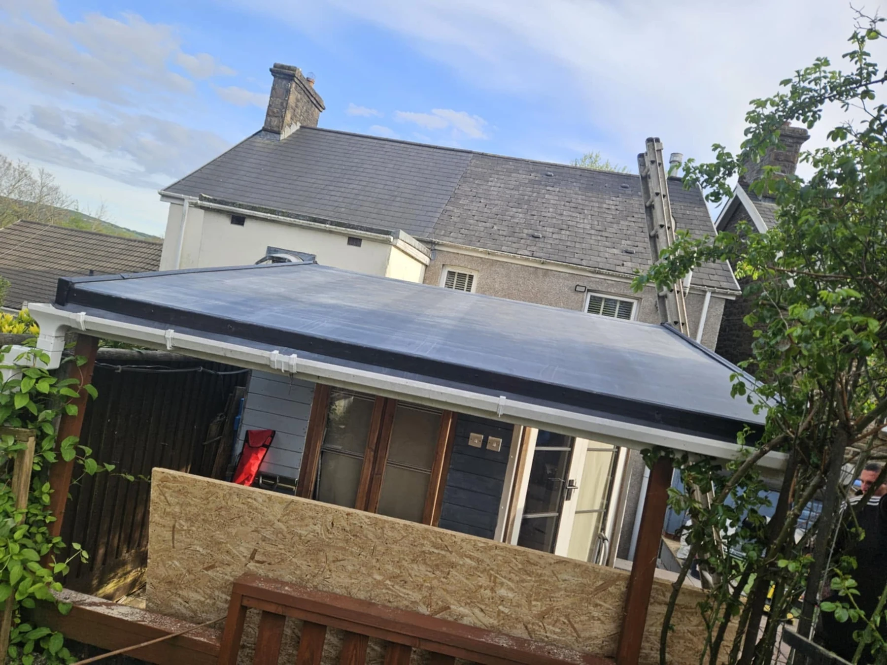
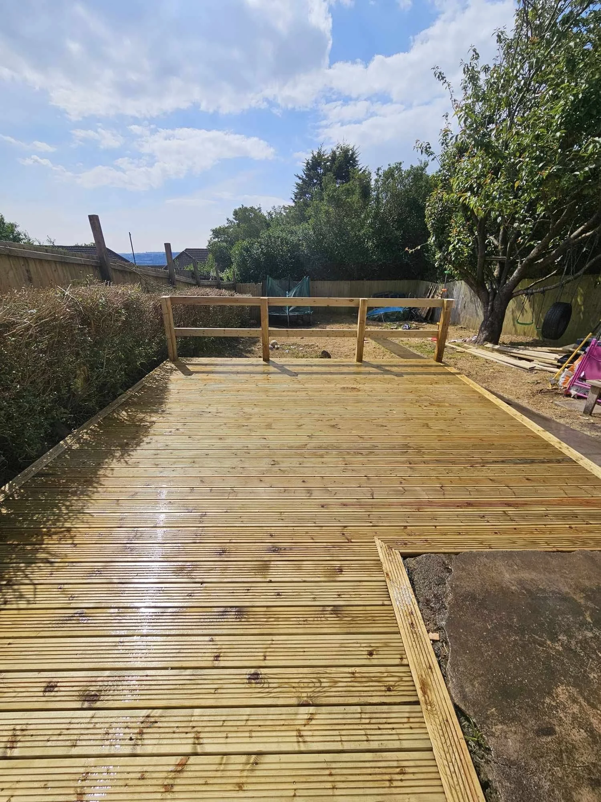
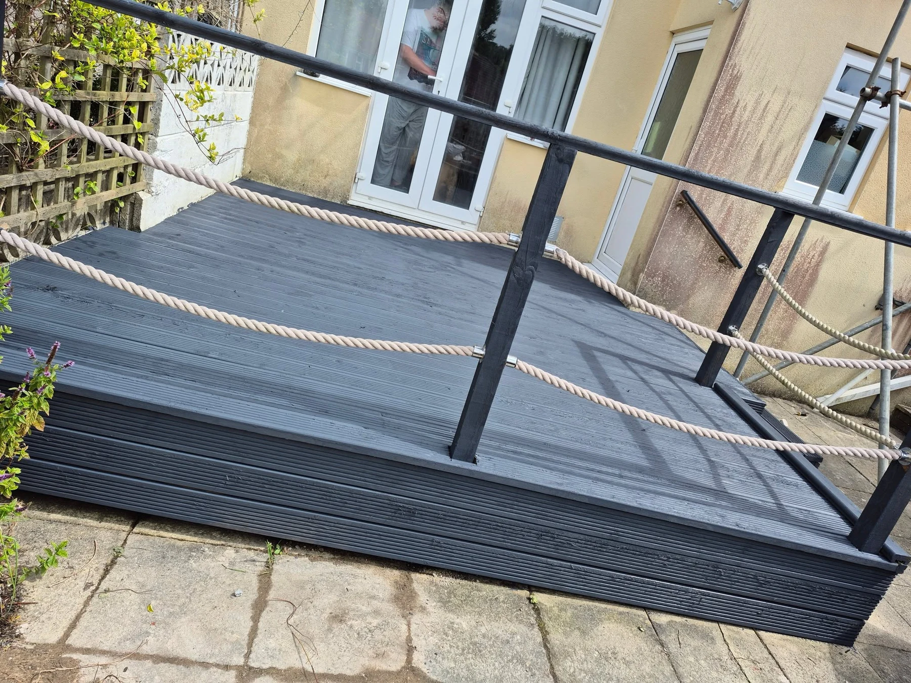

Roofing in detail
Matching views show this roof during tiling and the completed finish.

ACS · SWANSEA
A practical improvement. A better finish. Somewhere new to sit outside. ACS Property Maintenance Services takes on a range of property and outdoor projects in Swansea.
Browse the roofing, timber decking, composite decking, fencing and covered patio work below, then tell us what you have in mind.
Let’s discuss your project →

OUTDOOR LIVING
A covered patio changes how the garden feels throughout the day. These views show the same outdoor space in daylight and lit up at night.
Pergolas & covered patios →OUR WORK
Roofing and outdoor projects from the ACS portfolio. Tap any photograph to see the complete image.
Matching views show this roof during tiling and the completed finish.
Battens, tiles and the finished surface shown across two project views.
The timber frame and completed garden deck, kept together.
AROUND THE PROPERTY
Different materials and spaces, with the same focus on the finished job.
ACS PROPERTY MAINTENANCE
ACS covers a range of property works, with roofing and outdoor improvements featured in the portfolio. Share your plans and discuss the right scope for your home.
Send photos and your Swansea postcode.
Explain the work, materials and finish you have in mind.
Discuss access, scope, availability and a quote before booking.
CUSTOMER RECOMMENDATIONS
100% recommendBased on 11 Facebook reviews.
LOCAL PROPERTY WORKS
Based in Swansea. Include your postcode with your enquiry so travel, access and availability can be confirmed for your project.
LET’S TALK
Tell ACS what you want to improve. The form opens WhatsApp with your enquiry ready to review and send. You can add photos there.
Include approximate measurements, access details and preferred timescales if you know them.
Your details are only shared when you send the message. Privacy information.GOOD TO KNOW
Roofing, decking, fencing, pergolas, covered patios and other property maintenance. Describe the work you need so ACS can confirm the scope.
ACS Property Maintenance Services is based in Swansea. Include your postcode to confirm coverage and availability.
Photos, approximate measurements, your postcode and a description of your plans. Mention access restrictions and preferred materials if you have them.
The portfolio includes timber and grey composite decking. Discuss the material, finish and design you want for your space.
Yes. The project photographs include slatted pergola and covered patio installations. Share your dimensions and intended use.
Send photos of the surface and its condition to discuss exterior cleaning and maintenance.
The portfolio includes roofing during installation and completed tiling. Explain the work or issue and share photographs from a safe position.
LET’S TALK PROPERTY
Call ACS or send a few photos on WhatsApp.